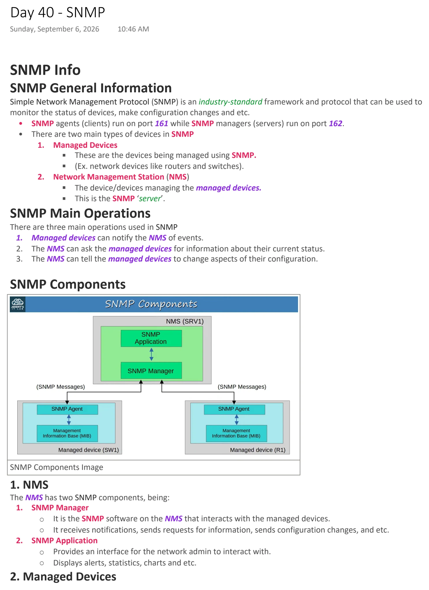
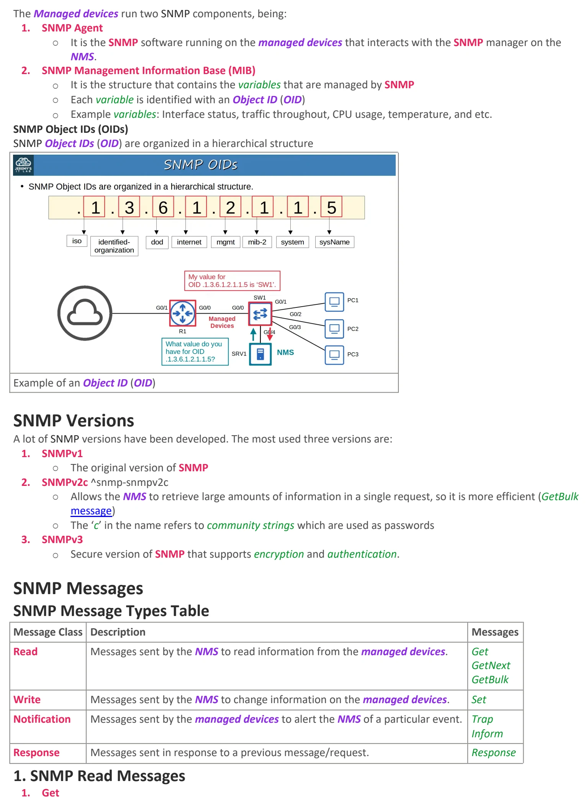
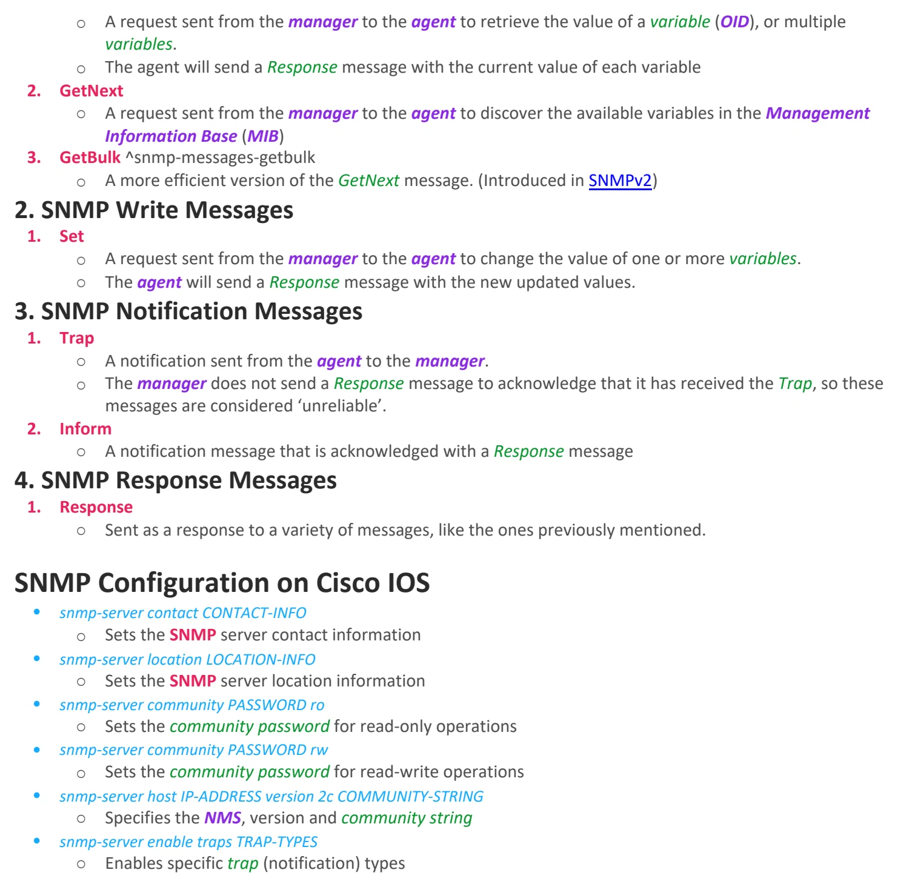

SNMP
Download original PDF


Text view — SNMP
Extracted from the original export. Diagrams and some formatting appear in the notes above.
Day 40 - SNMP Sunday, September 6, 2026 10:46 AM SNMP Info SNMP General Information Simple Network Management Protocol (SNMP) is an industry-standard framework and protocol that can be used to monitor the status of devices, make configuration changes and etc. • SNMP agents (clients) run on port 161 while SNMP managers (servers) run on port 162. • There are two main types of devices in SNMP 1. Managed Devices § These are the devices being managed using SNMP. § (Ex. network devices like routers and switches). 2. Network Management Station (NMS) § The device/devices managing the managed devices. § This is the SNMP ‘server’. SNMP Main Operations There are three main operations used in SNMP 1. Managed devices can notify the NMS of events. 2. The NMS can ask the managed devices for information about their current status. 3. The NMS can tell the managed devices to change aspects of their configuration. SNMP Components SNMP Components Image 1. NMS The NMS has two SNMP components, being: 1. SNMP Manager ○ It is the SNMP software on the NMS that interacts with the managed devices. ○ It receives notifications, sends requests for information, sends configuration changes, and etc. 2. SNMP Application ○ Provides an interface for the network admin to interact with. ○ Displays alerts, statistics, charts and etc. 2. Managed Devices The Managed devices run two SNMP components, being: 1. SNMP Agent ○ It is the SNMP software running on the managed devices that interacts with the SNMP manager on the NMS. 2. SNMP Management Information Base (MIB) ○ It is the structure that contains the variables that are managed by SNMP ○ Each variable is identified with an Object ID (OID) ○ Example variables: Interface status, traffic throughout, CPU usage, temperature, and etc. SNMP Object IDs (OIDs) SNMP Object IDs (OID) are organized in a hierarchical structure Example of an Object ID (OID) SNMP Versions A lot of SNMP versions have been developed. The most used three versions are: 1. SNMPv1 ○ The original version of SNMP 2. SNMPv2c ^snmp-snmpv2c ○ Allows the NMS to retrieve large amounts of information in a single request, so it is more efficient (GetBulk message) ○ The ‘c’ in the name refers to community strings which are used as passwords 3. SNMPv3 ○ Secure version of SNMP that supports encryption and authentication. SNMP Messages SNMP Message Types Table Message Class Description Messages Read Messages sent by the NMS to read information from the managed devices. Get GetNext GetBulk Write Messages sent by the NMS to change information on the managed devices. Set Notification Messages sent by the managed devices to alert the NMS of a particular event. Trap Inform Response Messages sent in response to a previous message/request. Response 1. SNMP Read Messages 1. Get ○ A request sent from the manager to the agent to retrieve the value of a variable (OID), or multiple variables. ○ The agent will send a Response message with the current value of each variable 2. GetNext ○ A request sent from the manager to the agent to discover the available variables in the Management Information Base (MIB) 3. GetBulk ^snmp-messages-getbulk ○ A more efficient version of the GetNext message. (Introduced in SNMPv2) 2. SNMP Write Messages 1. Set ○ A request sent from the manager to the agent to change the value of one or more variables. ○ The agent will send a Response message with the new updated values. 3. SNMP Notification Messages 1. Trap ○ A notification sent from the agent to the manager. ○ The manager does not send a Response message to acknowledge that it has received the Trap, so these messages are considered ‘unreliable’. 2. Inform ○ A notification message that is acknowledged with a Response message 4. SNMP Response Messages 1. Response ○ Sent as a response to a variety of messages, like the ones previously mentioned. SNMP Configuration on Cisco IOS • snmp-server contact CONTACT-INFO ○ Sets the SNMP server contact information • snmp-server location LOCATION-INFO ○ Sets the SNMP server location information • snmp-server community PASSWORD ro ○ Sets the community password for read-only operations • snmp-server community PASSWORD rw ○ Sets the community password for read-write operations • snmp-server host IP-ADDRESS version 2c COMMUNITY-STRING ○ Specifies the NMS, version and community string • snmp-server enable traps TRAP-TYPES ○ Enables specific trap (notification) types Day 40 - SNMP Sunday, September 6, 2026 10:46 AM SNMP Info SNMP General Information Simple Network Management Protocol (SNMP) is an industry-standard framework and protocol that can be used to monitor the status of devices, make configuration changes and etc. • SNMP agents (clients) run on port 161 while SNMP managers (servers) run on port 162. • There are two main types of devices in SNMP 1. Managed Devices § These are the devices being managed using SNMP. § (Ex. network devices like routers and switches). 2. Network Management Station (NMS) § The device/devices managing the managed devices. § This is the SNMP ‘server’. SNMP Main Operations There are three main operations used in SNMP 1. Managed devices can notify the NMS of events. 2. The NMS can ask the managed devices for information about their current status. 3. The NMS can tell the managed devices to change aspects of their configuration. SNMP Components SNMP Components Image 1. NMS The NMS has two SNMP components, being: 1. SNMP Manager ○ It is the SNMP software on the NMS that interacts with the managed devices. ○ It receives notifications, sends requests for information, sends configuration changes, and etc. 2. SNMP Application ○ Provides an interface for the network admin to interact with. ○ Displays alerts, statistics, charts and etc. 2. Managed Devices The Managed devices run two SNMP components, being: 1. SNMP Agent ○ It is the SNMP software running on the managed devices that interacts with the SNMP manager on the NMS. 2. SNMP Management Information Base (MIB) ○ It is the structure that contains the variables that are managed by SNMP ○ Each variable is identified with an Object ID (OID) ○ Example variables: Interface status, traffic throughout, CPU usage, temperature, and etc. SNMP Object IDs (OIDs) SNMP Object IDs (OID) are organized in a hierarchical structure Example of an Object ID (OID) SNMP Versions A lot of SNMP versions have been developed. The most used three versions are: 1. SNMPv1 ○ The original version of SNMP 2. SNMPv2c ^snmp-snmpv2c ○ Allows the NMS to retrieve large amounts of information in a single request, so it is more efficient (GetBulk message) ○ The ‘c’ in the name refers to community strings which are used as passwords 3. SNMPv3 ○ Secure version of SNMP that supports encryption and authentication. SNMP Messages SNMP Message Types Table Message Class Description Messages Read Messages sent by the NMS to read information from the managed devices. Get GetNext GetBulk Write Messages sent by the NMS to change information on the managed devices. Set Notification Messages sent by the managed devices to alert the NMS of a particular event. Trap Inform Response Messages sent in response to a previous message/request. Response 1. SNMP Read Messages 1. Get ○ A request sent from the manager to the agent to retrieve the value of a variable (OID), or multiple variables. ○ The agent will send a Response message with the current value of each variable 2. GetNext ○ A request sent from the manager to the agent to discover the available variables in the Management Information Base (MIB) 3. GetBulk ^snmp-messages-getbulk ○ A more efficient version of the GetNext message. (Introduced in SNMPv2) 2. SNMP Write Messages 1. Set ○ A request sent from the manager to the agent to change the value of one or more variables. ○ The agent will send a Response message with the new updated values. 3. SNMP Notification Messages 1. Trap ○ A notification sent from the agent to the manager. ○ The manager does not send a Response message to acknowledge that it has received the Trap, so these messages are considered ‘unreliable’. 2. Inform ○ A notification message that is acknowledged with a Response message 4. SNMP Response Messages 1. Response ○ Sent as a response to a variety of messages, like the ones previously mentioned. SNMP Configuration on Cisco IOS • snmp-server contact CONTACT-INFO ○ Sets the SNMP server contact information • snmp-server location LOCATION-INFO ○ Sets the SNMP server location information • snmp-server community PASSWORD ro ○ Sets the community password for read-only operations • snmp-server community PASSWORD rw ○ Sets the community password for read-write operations • snmp-server host IP-ADDRESS version 2c COMMUNITY-STRING ○ Specifies the NMS, version and community string • snmp-server enable traps TRAP-TYPES ○ Enables specific trap (notification) types Day 40 - SNMP Sunday, September 6, 2026 10:46 AM SNMP Info SNMP General Information Simple Network Management Protocol (SNMP) is an industry-standard framework and protocol that can be used to monitor the status of devices, make configuration changes and etc. • SNMP agents (clients) run on port 161 while SNMP managers (servers) run on port 162. • There are two main types of devices in SNMP 1. Managed Devices § These are the devices being managed using SNMP. § (Ex. network devices like routers and switches). 2. Network Management Station (NMS) § The device/devices managing the managed devices. § This is the SNMP ‘server’. SNMP Main Operations There are three main operations used in SNMP 1. Managed devices can notify the NMS of events. 2. The NMS can ask the managed devices for information about their current status. 3. The NMS can tell the managed devices to change aspects of their configuration. SNMP Components SNMP Components Image 1. NMS The NMS has two SNMP components, being: 1. SNMP Manager ○ It is the SNMP software on the NMS that interacts with the managed devices. ○ It receives notifications, sends requests for information, sends configuration changes, and etc. 2. SNMP Application ○ Provides an interface for the network admin to interact with. ○ Displays alerts, statistics, charts and etc. 2. Managed Devices The Managed devices run two SNMP components, being: 1. SNMP Agent ○ It is the SNMP software running on the managed devices that interacts with the SNMP manager on the NMS. 2. SNMP Management Information Base (MIB) ○ It is the structure that contains the variables that are managed by SNMP ○ Each variable is identified with an Object ID (OID) ○ Example variables: Interface status, traffic throughout, CPU usage, temperature, and etc. SNMP Object IDs (OIDs) SNMP Object IDs (OID) are organized in a hierarchical structure Example of an Object ID (OID) SNMP Versions A lot of SNMP versions have been developed. The most used three versions are: 1. SNMPv1 ○ The original version of SNMP 2. SNMPv2c ^snmp-snmpv2c ○ Allows the NMS to retrieve large amounts of information in a single request, so it is more efficient (GetBulk message) ○ The ‘c’ in the name refers to community strings which are used as passwords 3. SNMPv3 ○ Secure version of SNMP that supports encryption and authentication. SNMP Messages SNMP Message Types Table Message Class Description Messages Read Messages sent by the NMS to read information from the managed devices. Get GetNext GetBulk Write Messages sent by the NMS to change information on the managed devices. Set Notification Messages sent by the managed devices to alert the NMS of a particular event. Trap Inform Response Messages sent in response to a previous message/request. Response 1. SNMP Read Messages 1. Get ○ A request sent from the manager to the agent to retrieve the value of a variable (OID), or multiple variables. ○ The agent will send a Response message with the current value of each variable 2. GetNext ○ A request sent from the manager to the agent to discover the available variables in the Management Information Base (MIB) 3. GetBulk ^snmp-messages-getbulk ○ A more efficient version of the GetNext message. (Introduced in SNMPv2) 2. SNMP Write Messages 1. Set ○ A request sent from the manager to the agent to change the value of one or more variables. ○ The agent will send a Response message with the new updated values. 3. SNMP Notification Messages 1. Trap ○ A notification sent from the agent to the manager. ○ The manager does not send a Response message to acknowledge that it has received the Trap, so these messages are considered ‘unreliable’. 2. Inform ○ A notification message that is acknowledged with a Response message 4. SNMP Response Messages 1. Response ○ Sent as a response to a variety of messages, like the ones previously mentioned. SNMP Configuration on Cisco IOS • snmp-server contact CONTACT-INFO ○ Sets the SNMP server contact information • snmp-server location LOCATION-INFO ○ Sets the SNMP server location information • snmp-server community PASSWORD ro ○ Sets the community password for read-only operations • snmp-server community PASSWORD rw ○ Sets the community password for read-write operations • snmp-server host IP-ADDRESS version 2c COMMUNITY-STRING ○ Specifies the NMS, version and community string • snmp-server enable traps TRAP-TYPES ○ Enables specific trap (notification) types